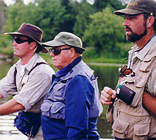
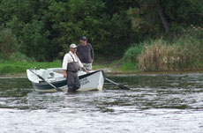
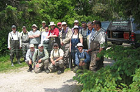

Indoor Fly Casting
The fly casting program for this season will begin on Wednesday February 27th and will continue ..
Grindstone Outfitters has operated a full time guide service since 1993. We offer guided trips on over 20 rivers in southern and south/central Ontario including the Saugeen River and Grand River. The experience of our guides is second to none on south central Ontario’s wilderness waterways. In 1995, Grindstone introduced the McKenzie style driftboat to the province and pioneered the guiding on many of the larger cold water rivers of southern Ontario. We currently have a small fleet of six boats at our disposal.
We have always put great emphasis on education within our guide program and our pro-staff keeps up on the latest trends in technique and equipment, assuring that you get the best shot at hooking a trophy. A guided day with Grindstone is not complete unless you leave us with greater skills than when you began. From the intricacies of nymphing and dry fly fishing for trout , to the more complex systems required for steelhead in cold water, every guide at Grindstone can help bridge the gap from where you are now, to where you would like to be as an angler.
Grindstone guides work over 200 days a year and along with other members of our team, we spend more hours on the river than many are awake. There are few species we can’t target and our region includes the cold water haunts between Lake Erie and Georgian Bay. Steelhead, browns, rainbow and smallmouth bass headline the list, but we have the resources to go after just about anything in south central and Southern Ontario, including the great muskellunge. Anglers interested in pursuing fish not found in our region or an exciting change of pace are invited to join us for a hosted fishing trip to the mountains, coasts, or international destination.
With six boats and eleven members on our pro-staff team, no one is more equipped to accommodate corporate groups than Grindstone. With sufficient notice, we can handle groups of almost any size, so the next time you need to plan a corporate outing, contact us.
Contact us today to inquire about a guided trip on any of the great rivers in Ontario. You can call the shop at 905-689-0880 or using our guide trip inquiry form below. You can find out more about our services on our Ontario Fishing Guide Service page.